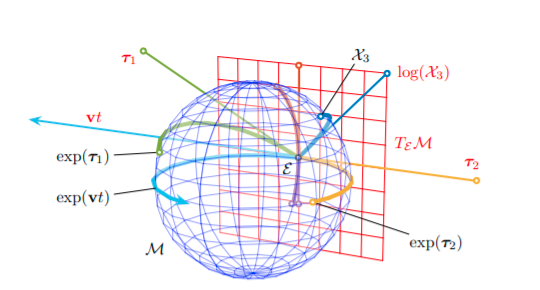

kornia.geometry.liegroup¶
The Lie group encompasses the concepts of group and smooth manifold in a unique body.
A group is a non-empty set with an operation that satisfies the following constraints: the operation is associative, has an identity element, and every element of the set has an inverse element.
See more: Group
A Lie group \(G\) is a smooth manifold whose elements satisfy the group axioms.You can visualize the idea of manifold like a curved, smooth (hyper)-surface, with no edges or spikes, embedded in a space of higher dimension.
See more: Manifold
In robotics, we say that our state vector evolves on this surface, that is, the manifold describes or is defined by the constraints imposed on the state.
lie algebra¶
If \(M\) is the manifold that represents a lie group, the tangent space at the identity is called the Lie algebra of \(M\). The Lie algebra \(m\) is a vector space. As such, its elements can be identified with vectors in \(R^d\), whose dimension \(d\) is the number of degrees of freedom of \(M\). For example \(d\) would be 3 in the case of lie group \(SO3\)
lie group and lie algebra¶
Every Lie group has an associated Lie algebra. We relate the Lie group with its Lie algebra through the following facts
The Lie algebra \(m\) is a vector space. As such, its elements can be identified with vectors in \(R^d\), whose dimension \(d\) is the number of degrees of freedom of \(M\).
The exponential map, exp : \(m\) → \(M\), exactly converts elements of the Lie algebra into elements of the group. The log map is the inverse operation.
Reference: Micro lie theory
- class kornia.geometry.liegroup.So3(q)¶
Base class to represent the So3 group.
The SO(3) is the group of all rotations about the origin of three-dimensional Euclidean space \(R^3\) under the operation of composition. See more: https://en.wikipedia.org/wiki/3D_rotation_group
We internally represent the rotation by a unit quaternion.
Example
>>> q = Quaternion.identity() >>> s = So3(q) >>> s.q Parameter containing: tensor([1., 0., 0., 0.], requires_grad=True)
- static Jl(vec)¶
Alias for left jacobian.
- static Jr(vec)¶
Alias for right jacobian.
- __init__(q)¶
Construct the base class.
Internally represented by a unit quaternion q.
- Parameters:
q (
Quaternion) – Quaternion with the shape of \((B, 4)\).
Example
>>> data = torch.ones((2, 4)) >>> q = Quaternion(data) >>> So3(q) Parameter containing: tensor([[1., 1., 1., 1.], [1., 1., 1., 1.]], requires_grad=True)
- __mul__(right)¶
Compose two So3 transformations.
- adjoint()¶
Return the adjoint matrix of shape \((B, 3, 3)\).
- Return type:
Example
>>> s = So3.identity() >>> s.adjoint() tensor([[1., 0., 0.], [0., 1., 0.], [0., 0., 1.]], grad_fn=<StackBackward0>)
- static exp(v)¶
Convert elements of lie algebra to elements of lie group.
See more: https://vision.in.tum.de/_media/members/demmeln/nurlanov2021so3log.pdf
Example
>>> v = torch.zeros((2, 3)) >>> s = So3.exp(v) >>> s Parameter containing: tensor([[1., 0., 0., 0.], [1., 0., 0., 0.]], requires_grad=True)
- classmethod from_matrix(matrix)¶
Create So3 from a rotation matrix.
Example
>>> m = torch.eye(3) >>> s = So3.from_matrix(m) >>> s Parameter containing: tensor([1., 0., 0., 0.], requires_grad=True)
- classmethod from_wxyz(wxyz)¶
Create So3 from a tensor representing a quaternion.
Example
>>> q = torch.tensor([1., 0., 0., 0.]) >>> s = So3.from_wxyz(q) >>> s Parameter containing: tensor([1., 0., 0., 0.], requires_grad=True)
- static hat(v)¶
Convert elements from vector space to lie algebra. Returns matrix of shape \((B,3,3)\).
- Parameters:
v (Vector3 | Tensor) – Vector3 or tensor of shape \((B,3)\).
- Return type:
Tensor
Example
>>> v = torch.ones((1,3)) >>> m = So3.hat(v) >>> m tensor([[[ 0., -1., 1.], [ 1., 0., -1.], [-1., 1., 0.]]])
- classmethod identity(batch_size=None, device=None, dtype=None)¶
Create a So3 group representing an identity rotation.
- Parameters:
- Return type:
Example
>>> s = So3.identity() >>> s Parameter containing: tensor([1., 0., 0., 0.], requires_grad=True)
>>> s = So3.identity(batch_size=2) >>> s Parameter containing: tensor([[1., 0., 0., 0.], [1., 0., 0., 0.]], requires_grad=True)
- inverse()¶
Return the inverse transformation.
- Return type:
Example
>>> s = So3.identity() >>> s.inverse() Parameter containing: tensor([1., -0., -0., -0.], requires_grad=True)
- static left_jacobian(vec)¶
Compute the left Jacobian of So3.
Example
>>> vec = torch.tensor([1., 2., 3.]) >>> So3.left_jacobian(vec) tensor([[-0.0687, -0.2267, 0.5074], [ 0.5556, 0.1779, 0.3629], [-0.0141, 0.6236, 0.5890]])
- log()¶
Convert elements of lie group to elements of lie algebra.
- Return type:
Example
>>> data = torch.ones((2, 4)) >>> q = Quaternion(data) >>> So3(q).log() tensor([[0., 0., 0.], [0., 0., 0.]], grad_fn=<WhereBackward0>)
- matrix()¶
Convert the quaternion to a rotation matrix of shape \((B,3,3)\).
The matrix is of the form: :rtype:
Tensor\[\begin{split}\begin{bmatrix} 1-2y^2-2z^2 & 2xy-2zw & 2xy+2yw \\ 2xy+2zw & 1-2x^2-2z^2 & 2yz-2xw \\ 2xz-2yw & 2yz+2xw & 1-2x^2-2y^2\end{bmatrix}\end{split}\]Example
>>> s = So3.identity() >>> m = s.matrix() >>> m tensor([[1., 0., 0.], [0., 1., 0.], [0., 0., 1.]], grad_fn=<StackBackward0>)
- property q: Quaternion¶
Return the underlying data with shape \((B,4)\).
- classmethod random(batch_size=None, device=None, dtype=None)¶
Create a So3 group representing a random rotation.
- Parameters:
- Return type:
Example
>>> s = So3.random() >>> s = So3.random(batch_size=3)
- static right_jacobian(vec)¶
Compute the right Jacobian of So3.
Example
>>> vec = torch.tensor([1., 2., 3.]) >>> So3.right_jacobian(vec) tensor([[-0.0687, 0.5556, -0.0141], [-0.2267, 0.1779, 0.6236], [ 0.5074, 0.3629, 0.5890]])
- classmethod rot_x(x)¶
Construct a x-axis rotation.
- classmethod rot_y(y)¶
Construct a z-axis rotation.
- classmethod rot_z(z)¶
Construct a z-axis rotation.
- static vee(omega)¶
Convert elements from lie algebra to vector space. Returns vector of shape \((B,3)\).
\[\begin{split}omega = \begin{bmatrix} 0 & -c & b \\ c & 0 & -a \\ -b & a & 0\end{bmatrix}\end{split}\]Example
>>> v = torch.ones((1,3)) >>> omega = So3.hat(v) >>> So3.vee(omega) tensor([[1., 1., 1.]])
- class kornia.geometry.liegroup.Se3(rotation, translation)¶
Base class to represent the Se3 group.
The SE(3) is the group of rigid body transformations about the origin of three-dimensional Euclidean space \(R^3\) under the operation of composition. See more: https://ingmec.ual.es/~jlblanco/papers/jlblanco2010geometry3D_techrep.pdf
Example
>>> q = Quaternion.identity() >>> s = Se3(q, torch.ones(3)) >>> s.r Parameter containing: tensor([1., 0., 0., 0.], requires_grad=True) >>> s.t Parameter containing: tensor([1., 1., 1.], requires_grad=True)
- __init__(rotation, translation)¶
Construct the base class.
Internally represented by a unit quaternion q and a translation 3-vector.
- Parameters:
rotation (Quaternion | So3) – So3 group encompassing a rotation.
translation (Vector3 | Tensor) – Vector3 or translation tensor with the shape of \((B, 3)\).
Example
>>> from kornia.geometry.quaternion import Quaternion >>> q = Quaternion.identity(batch_size=1) >>> s = Se3(q, torch.ones((1, 3))) >>> s.r Parameter containing: tensor([[1., 0., 0., 0.]], requires_grad=True) >>> s.t Parameter containing: tensor([[1., 1., 1.]], requires_grad=True)
- __mul__(right)¶
Compose two Se3 transformations.
- Parameters:
right (Se3) – the other Se3 transformation.
- Return type:
Se3 | Vector3 | Tensor
- Returns:
The resulting Se3 transformation.
- adjoint()¶
Return the adjoint matrix of shape \((B, 6, 6)\).
- Return type:
Example
>>> s = Se3.identity() >>> s.adjoint() tensor([[1., 0., 0., 0., 0., 0.], [0., 1., 0., 0., 0., 0.], [0., 0., 1., 0., 0., 0.], [0., 0., 0., 1., 0., 0.], [0., 0., 0., 0., 1., 0.], [0., 0., 0., 0., 0., 1.]], grad_fn=<CatBackward0>)
- static exp(v)¶
Convert elements of lie algebra to elements of lie group.
Example
>>> v = torch.zeros((1, 6)) >>> s = Se3.exp(v) >>> s.r Parameter containing: tensor([[1., 0., 0., 0.]], requires_grad=True) >>> s.t Parameter containing: tensor([[0., 0., 0.]], requires_grad=True)
- classmethod from_matrix(matrix)¶
Create a Se3 group from a matrix.
Example
>>> s = Se3.from_matrix(torch.eye(4)) >>> s.r Parameter containing: tensor([1., 0., 0., 0.], requires_grad=True) >>> s.t Parameter containing: tensor([0., 0., 0.], requires_grad=True)
- classmethod from_qxyz(qxyz)¶
Create a Se3 group a quaternion and translation vector.
Example
>>> qxyz = torch.tensor([1., 2., 3., 0., 0., 0., 1.]) >>> s = Se3.from_qxyz(qxyz) >>> s.r Parameter containing: tensor([1., 2., 3., 0.], requires_grad=True) >>> s.t x: 0.0 y: 0.0 z: 1.0
- static hat(v)¶
Convert elements from vector space to lie algebra.
- Parameters:
v (
Tensor) – vector of shape \((B, 6)\).- Return type:
- Returns:
matrix of shape \((B, 4, 4)\).
Example
>>> v = torch.ones((1, 6)) >>> m = Se3.hat(v) >>> m tensor([[[ 0., -1., 1., 1.], [ 1., 0., -1., 1.], [-1., 1., 0., 1.], [ 0., 0., 0., 0.]]])
- classmethod identity(batch_size=None, device=None, dtype=None)¶
Create a Se3 group representing an identity rotation and zero translation.
- Parameters:
- Return type:
Example
>>> s = Se3.identity() >>> s.r Parameter containing: tensor([1., 0., 0., 0.], requires_grad=True) >>> s.t x: 0.0 y: 0.0 z: 0.0
- inverse()¶
Return the inverse transformation.
- Return type:
Example
>>> s = Se3(So3.identity(), torch.ones(3)) >>> s_inv = s.inverse() >>> s_inv.r Parameter containing: tensor([1., -0., -0., -0.], requires_grad=True) >>> s_inv.t Parameter containing: tensor([-1., -1., -1.], requires_grad=True)
- log()¶
Convert elements of lie group to elements of lie algebra.
- Return type:
Example
>>> from kornia.geometry.quaternion import Quaternion >>> q = Quaternion.identity() >>> Se3(q, torch.zeros(3)).log() tensor([0., 0., 0., 0., 0., 0.], grad_fn=<CatBackward0>)
- matrix()¶
Return the matrix representation of shape \((B, 4, 4)\).
- Return type:
Example
>>> s = Se3(So3.identity(), torch.ones(3)) >>> s.matrix() tensor([[1., 0., 0., 1.], [0., 1., 0., 1.], [0., 0., 1., 1.], [0., 0., 0., 1.]], grad_fn=<CopySlices>)
- property quaternion: Quaternion¶
Return the underlying rotation(Quaternion).
- classmethod random(batch_size=None, device=None, dtype=None)¶
Create a Se3 group representing a random transformation.
- Parameters:
- Return type:
Example
>>> s = Se3.random() >>> s = Se3.random(batch_size=3)
- classmethod rot_x(x)¶
Construct a x-axis rotation.
- classmethod rot_y(y)¶
Construct a y-axis rotation.
- classmethod rot_z(z)¶
Construct a z-axis rotation.
- property t: Vector3 | Tensor¶
Return the underlying translation vector of shape \((B,3)\).
- classmethod trans(x, y, z)¶
Construct a translation only Se3 instance.
- classmethod trans_x(x)¶
Construct a x-axis translation.
- classmethod trans_y(y)¶
Construct a y-axis translation.
- classmethod trans_z(z)¶
Construct a z-axis translation.
- property translation: Vector3 | Tensor¶
Return the underlying translation vector of shape \((B,3)\).
- static vee(omega)¶
Convert elements from lie algebra to vector space.
- Parameters:
omega (
Tensor) – 4x4-matrix representing lie algebra of shape \((B,4,4)\).- Return type:
- Returns:
vector of shape \((B,6)\).
Example
>>> v = torch.ones((1, 6)) >>> omega_hat = Se3.hat(v) >>> Se3.vee(omega_hat) tensor([[1., 1., 1., 1., 1., 1.]])
- class kornia.geometry.liegroup.So2(z)¶
Base class to represent the So2 group.
The SO(2) is the group of all rotations about the origin of two-dimensional Euclidean space \(R^2\) under the operation of composition. See more: https://en.wikipedia.org/wiki/Orthogonal_group#Special_orthogonal_group
We internally represent the rotation by a complex number.
Example
>>> real = torch.tensor([1.0]) >>> imag = torch.tensor([2.0]) >>> So2(torch.complex(real, imag)) Parameter containing: tensor([1.+2.j], requires_grad=True)
- __init__(z)¶
Construct the base class.
Internally represented by complex number z.
- Parameters:
z (
Tensor) – Complex number with the shape of \((B, 1)\) or \((B)\).
Example
>>> real = torch.tensor(1.0) >>> imag = torch.tensor(2.0) >>> So2(torch.complex(real, imag)).z Parameter containing: tensor(1.+2.j, requires_grad=True)
- __mul__(right)¶
Perform a left-multiplication either rotation concatenation or point-transform.
- Parameters:
right (So2 | Tensor) – the other So2 transformation.
- Return type:
So2 | Tensor
- Returns:
The resulting So2 transformation.
- adjoint()¶
Return the adjoint matrix of shape \((B, 2, 2)\).
- Return type:
Example
>>> s = So2.identity() >>> s.adjoint() tensor([[1., -0.], [0., 1.]], grad_fn=<StackBackward0>)
- static exp(theta)¶
Convert elements of lie algebra to elements of lie group.
Example
>>> v = torch.tensor([3.1415/2]) >>> s = So2.exp(v) >>> s Parameter containing: tensor([4.6329e-05+1.j], requires_grad=True)
- classmethod from_matrix(matrix)¶
Create So2 from a rotation matrix.
- Parameters:
matrix (
Tensor) – the rotation matrix to convert of shape \((B, 2, 2)\).- Return type:
Example
>>> m = torch.eye(2) >>> s = So2.from_matrix(m) >>> s.z Parameter containing: tensor(1.+0.j, requires_grad=True)
- static hat(theta)¶
Convert elements from vector space to lie algebra. Returns matrix of shape \((B, 2, 2)\).
Example
>>> theta = torch.tensor(3.1415/2) >>> So2.hat(theta) tensor([[0.0000, 1.5707], [1.5707, 0.0000]])
- classmethod identity(batch_size=None, device=None, dtype=None)¶
Create a So2 group representing an identity rotation.
- Parameters:
- Return type:
Example
>>> s = So2.identity(batch_size=2) >>> s Parameter containing: tensor([1.+0.j, 1.+0.j], requires_grad=True)
- inverse()¶
Return the inverse transformation.
- Return type:
Example
>>> s = So2.identity() >>> s.inverse().z Parameter containing: tensor(1.+0.j, requires_grad=True)
- log()¶
Convert elements of lie group to elements of lie algebra.
- Return type:
Example
>>> real = torch.tensor([1.0]) >>> imag = torch.tensor([3.0]) >>> So2(torch.complex(real, imag)).log() tensor([1.2490], grad_fn=<Atan2Backward0>)
- matrix()¶
Convert the complex number to a rotation matrix of shape \((B, 2, 2)\).
- Return type:
Example
>>> s = So2.identity() >>> m = s.matrix() >>> m tensor([[1., -0.], [0., 1.]], grad_fn=<StackBackward0>)
- classmethod random(batch_size=None, device=None, dtype=None)¶
Create a So2 group representing a random rotation.
- Parameters:
- Return type:
Example
>>> s = So2.random() >>> s = So2.random(batch_size=3)
- static vee(omega)¶
Convert elements from lie algebra to vector space. Returns vector of shape \((B,)\).
Example
>>> v = torch.ones(3) >>> omega = So2.hat(v) >>> So2.vee(omega) tensor([1., 1., 1.])
- class kornia.geometry.liegroup.Se2(rotation, translation)¶
Base class to represent the Se2 group.
The SE(2) is the group of rigid body transformations about the origin of two-dimensional Euclidean space \(R^2\) under the operation of composition. See more:
Example
>>> so2 = So2.identity(1) >>> t = torch.ones((1, 2)) >>> se2 = Se2(so2, t) >>> se2 rotation: Parameter containing: tensor([1.+0.j], requires_grad=True) translation: Parameter containing: tensor([[1., 1.]], requires_grad=True)
- __init__(rotation, translation)¶
Construct the base class.
Internally represented by a complex number z and a translation 2-vector.
- Parameters:
rotation (So2) – So2 group encompassing a rotation.
translation (Vector2 | Tensor) – translation vector with the shape of \((B, 2)\).
Example
>>> so2 = So2.identity(1) >>> t = torch.ones((1, 2)) >>> se2 = Se2(so2, t) >>> se2 rotation: Parameter containing: tensor([1.+0.j], requires_grad=True) translation: Parameter containing: tensor([[1., 1.]], requires_grad=True)
- __mul__(right)¶
Compose two Se2 transformations.
- Parameters:
right (Se2 | Tensor) – the other Se2 transformation.
- Return type:
Se2 | Tensor
- Returns:
The resulting Se2 transformation.
- adjoint()¶
Return the adjoint matrix of shape \((B, 3, 3)\).
- Return type:
Example
>>> s = Se2.identity() >>> s.adjoint() tensor([[1., -0., 0.], [0., 1., -0.], [0., 0., 1.]], grad_fn=<CopySlices>)
- static exp(v)¶
Convert elements of lie algebra to elements of lie group.
Example
>>> v = torch.ones((1, 3)) >>> s = Se2.exp(v) >>> s.r Parameter containing: tensor([0.5403+0.8415j], requires_grad=True) >>> s.t Parameter containing: tensor([[0.3818, 1.3012]], requires_grad=True)
- classmethod from_matrix(matrix)¶
Create an Se2 group from a matrix.
Example
>>> s = Se2.from_matrix(torch.eye(3).repeat(2, 1, 1)) >>> s.r Parameter containing: tensor([1.+0.j, 1.+0.j], requires_grad=True) >>> s.t Parameter containing: tensor([[0., 0.], [0., 0.]], requires_grad=True)
- static hat(v)¶
Convert elements from vector space to lie algebra. Returns matrix of shape \((B, 3, 3)\).
Example
>>> theta = torch.tensor(3.1415/2) >>> So2.hat(theta) tensor([[0.0000, 1.5707], [1.5707, 0.0000]])
- classmethod identity(batch_size=None, device=None, dtype=None)¶
Create a Se2 group representing an identity rotation and zero translation.
- Parameters:
- Return type:
Example
>>> s = Se2.identity(1) >>> s.r Parameter containing: tensor([1.+0.j], requires_grad=True) >>> s.t x: tensor([0.]) y: tensor([0.])
- inverse()¶
Return the inverse transformation.
- Return type:
Example
>>> s = Se2(So2.identity(1), torch.ones(1,2)) >>> s_inv = s.inverse() >>> s_inv.r Parameter containing: tensor([1.+0.j], requires_grad=True) >>> s_inv.t Parameter containing: tensor([[-1., -1.]], requires_grad=True)
- log()¶
Convert elements of lie group to elements of lie algebra.
- Return type:
Example
>>> v = torch.ones((1, 3)) >>> s = Se2.exp(v).log() >>> s tensor([[1.0000, 1.0000, 1.0000]], grad_fn=<StackBackward0>)
- matrix()¶
Return the matrix representation of shape \((B, 3, 3)\).
- Return type:
Example
>>> s = Se2(So2.identity(1), torch.ones(1, 2)) >>> s.matrix() tensor([[[1., -0., 1.], [0., 1., 1.], [0., 0., 1.]]], grad_fn=<CopySlices>)
- classmethod random(batch_size=None, device=None, dtype=None)¶
Create a Se2 group representing a random transformation.
- Parameters:
- Return type:
Example
>>> s = Se2.random() >>> s = Se2.random(batch_size=3)
- property t: Vector2 | Parameter¶
Return the underlying translation vector of shape \((B,2)\).
- classmethod trans(x, y)¶
Construct a translation only Se2 instance.
- classmethod trans_x(x)¶
Construct a x-axis translation.
- classmethod trans_y(y)¶
Construct a y-axis translation.
- property translation: Vector2 | Parameter¶
Return the underlying translation vector of shape \((B,2)\).
- static vee(omega)¶
Convert elements from lie algebra to vector space.
- Parameters:
omega (
Tensor) – 3x3-matrix representing lie algebra of shape \((B, 3, 3)\).- Return type:
- Returns:
vector of shape \((B, 3)\).
Example
>>> v = torch.ones(3) >>> omega_hat = Se2.hat(v) >>> Se2.vee(omega_hat) tensor([1., 1., 1.])